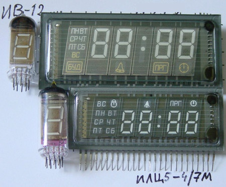

Самые большие часы массовые на ИВ-26 с 7 точками. В часах Электроника 7-06К в первых 12 горизонтально получалась матрица 7х12, размер знака получался 150х39мм.
В поздних моделях Электроника 7-06К индикатор сэкономили сделав 7х11 с размером знака 137х39.
По местным ценам набор индикаторов обойдётся в 12700р. А сами часы с местного завода были проданы помнится за 3000 пару лет назад. Завод в начале экономил деньги на ремонт, а потом покупать по 400р за лампу не захотел и просто списал их, теперь там в другом месте стоят светодиодные покрупнее.

Самые большие 1 знак без точки ИЛЦ1-1/7 со стеклом 140х83, знак 85х46. Размер часов получается 165х366, но эстетически покрупнее 164х415. Цифры интересные, будто коробочка сложена в 3д, такие часы хороши будут на советские дворцы, может даже в кино видел. Часов с ними не знаю.
Комплект индикаторов продают за 14000 при цене отдельно 4000р штука.
В маленькой версии часов Электроника 7-06М стояли 4 индикатора ИВ-26 (ИВ-26 тип3) вертикально. Получался знак 79х46.
Цена индикаторов 4400р.
В этом плане прошлый индикатор намного круче.
Поменьше ИЛЦ1-1/8Л 1 цифра с точкой стекло 98х45, знак 55х19 не считая точки. Размер 113х216 или эстетически 113х250мм.
Стояли в часах "Индикатор часу побутовий РИТМ", с редким разделителем, на него не нашёл название, в этот раз.
Часы продаются за 7000-8500. Индикаторы обойдутся по 1500р штука 6000р комплект.
Не скажу что индикаторы хорошие, просто удобные и редкие, поэтому цена завышена.
Часы будильник с днями недели и таймером программируемые П-543 крупная версия (серийного ИЛЦ5-4/7М). Наверно самая крупная сборка, ещё и с календарём.
Использовыался в часах Электроника 7-21.
Размер примерно 135х55мм. Высота знаков предположительно 22мм.
Цена 1000р.

ИЛЦ14-4/7МВ похож на ИЛЦ5-4/7М но крупнее цифры и круглые точки
ИВ-11(под пайку), ИВ-12(с цоколем) встречались в первых часах на рассыпухе. Колба 67х22мм, знаки заявлены 21х14.6мм. Если верить описчанию размеров знаков, то они примерно на этом месте.
Комплект ИВ-11 обойдётся от 500р, ИВ-12 подороже, и вопрос к новизне.
Применялись в часах Электроника Б6-403
Очень крупная склянка с небольшими знаками ИЛЦ1-6/7 3 секции по 2 разряда без разделителей размером стекла (по фото 125х59) (по даташиту 132x53), размер знаков ничего особенного 18х10, но сами знаки 3д такие же как в большом ИЛЦ1-1/7.
Уникальность в форме сегментов. Но как индикатор у этой фигни даже точек нет.
Вроде бы продают за 600р.
3 часовых индикатора, похожие но разные разделитель. Размер стекла 133х47мм, знака 21х11мм.
Круглые точки, точка и колькольчик и 2 точки.
ИЛЦ1-4/7Л-Р сложно сказать он ли на фото.
ИЛЦ4-5/7Л точка и будильник
ИВЛ1-7/5 раздельтельные точки
Если это они, то получается что их знаки точно не больше ИВ-11, ИВ-12, а расстояние между сегментами даже больше.
Единственное их преимущество это как раз сами точки, и компактность.
Часы будильник с днями недели и таймером программируемые ИЛЦ5-4/7М (серийная мини версия П-543).
Часы будидильник ИЛЦ8-4/7 он же УИ-4.
!
ИВ-22
!
Где то тут стандартные газоразрядные. Высота знака 18мм.
ИН-14 цифровые.
ИН-19А знаки % M P m K n μ °C
ИН-19Б знаки A F H S T V Ω Hz
ИН-19В знаки П A/B ∞ < - > + dB
ИН-1 круглая с цоколем, ИН-4 без цоколя.
ИН-7 знаки n + m A V M Ω ~ K -
ИН-7А знаки M + m % μ - K П
ИН-7Б знаки S Hz V Ω
ИН-12 цифровая
ИН-15A знаки μ P - + m K П % n
ИН-15Б знаки A F Hz H V S Ω W
Часы будильник с днями недели и таймером программируемые и номером программы ИЛЦ3-5/7. Цифры тоньше.
Индикатор от СВЧ печки. ИЛЦ3-4/7М. 2 пары разрядов для часов и минут без разделителя. Отличается выводами сверху.
!
ИЛЦ1-1/9 применялся в переключателе каналов телевизора.
знаки крупнее ИВЛ2-7/5
Крупнее ИВ-8
Часы ИВЛ2-7/5
Индикатор видеомагнитовона электроника ВМ-12 П-404,ИЛМ1-7Л копии иностранного с цифрами внизу; ИЛМ2-7Л без цифр внизу.
Дни недели, ВКЛ ВЫКЛ, знак пауза, точка после часов.
Размер знаков чуть меньше ИВЛ2-7/5
ИЛЦ1-9/7М индикатор видеомагнитофона Электроника ВМ-18.
********************************************************************************************